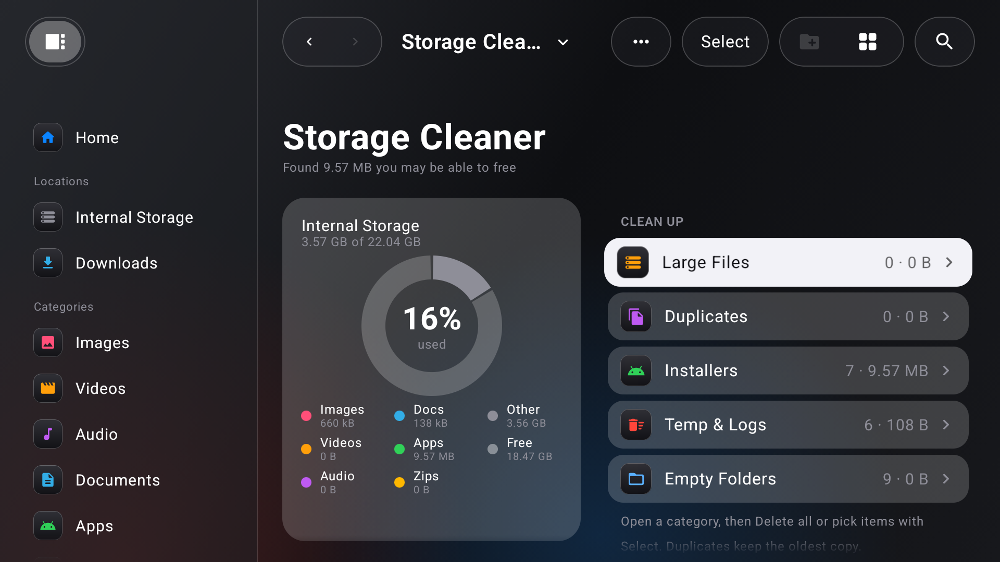
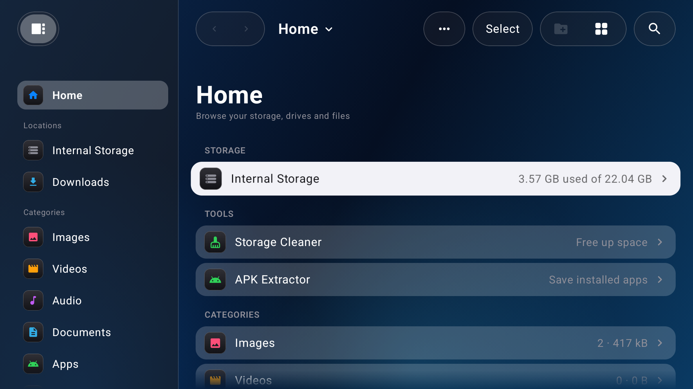
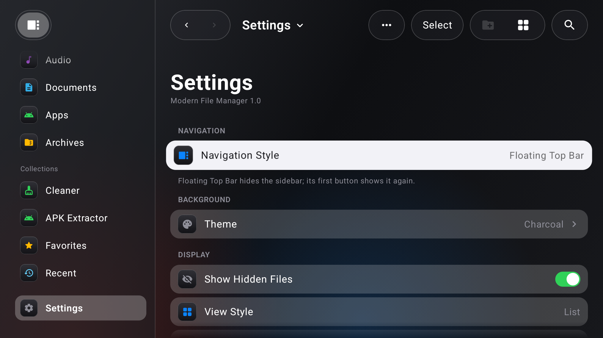

Clean up your TV from the couch.
A file manager made for the remote. Browse storage, free up space and extract APKs, all with a D-pad.
Android TV / Google TV · Android 8.0+

A file manager made for the remote. Browse storage, free up space and extract APKs, all with a D-pad.
Android TV / Google TV · Android 8.0+
Large files, duplicates, installers, temp and empty folders.

Save any installed app's APK, including split APKs.

Sidebar or floating top bar.

Or use your own image as the background.
Copy the APK to your TV with a USB drive or a sideload app, or use adb:
adb connect <tv-ip>:5555 adb install ModernFileManager_1.0-release.apk